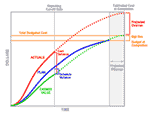

Advertisements
Copyright © tutorialspoint.com
|  |
Earned Value Management (EVM) technique used to track the Progress and Status of a Project & Forcast the likely future performance of the Project. Earned Value Management (EVM) technique integrates the scope, schedule and cost. If you are a project manager then its important for you to learn EVM |
Eearned Value Management - An Overview
This chapter gives an overview of Earned Value Management.
Earned Value Management - Baisc Elements
This chapter gives brief description of all the basic elements which are part of EVM.
Earned Value Management - Cost Variance
This chapter covers Cost Variance, Cost Variance Index and Cost Variance Percentage.
Earned Value Management - Schedule Variance
This chapter covers Schedule Variance, Schedule Variance Index and Schedule Variance Percentage.
Earned Value Management - Miscellaneous Formula
This chapter covers various formula like BAC, EAC, VAC etc.
Earned Value Management - Example
This chapter gives you one example which will make you clear on how to calculate EVM and other variances.
Copyright © tutorialspoint.com